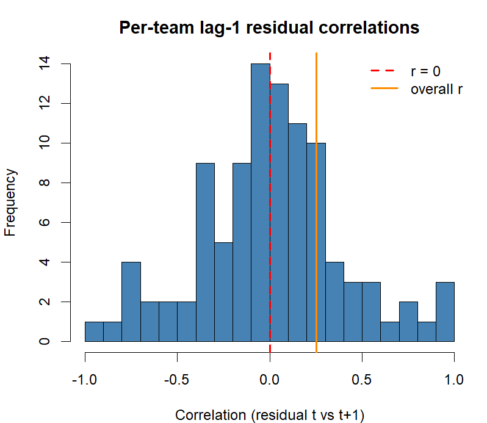

Coach Valuation: Isolating a Manager's Effect on Results
How much of a football team's performance is the coach, versus the squad he's given? This project builds a statistical pipeline to answer that question and validates the resulting coach ratings three independent ways.
The problem
Squad spending explains most of a football team's league performance, which makes it hard to tell whether a manager is actually good or simply well-resourced. Raw squad value is a weak proxy for what a coach actually deployed, since it ignores who played the minutes. This project's core hypothesis: a minutes-weighted squad-value metric predicts final points more accurately than raw squad value, and the leftover residual — performance above or below what the squad alone would predict — is a defensible signal of coaching quality.
Approach
Squad values, minutes, coach tenures, and advanced match stats are scraped and cached locally in R. For each team-season, minutes-weighted squad value is computed and compared against raw squad value as a predictor of final points. The better model's residuals are then attributed to individual coach stints using a mixed-effects model (coach as a random effect, games-weighted so short caretaker spells don't dominate), producing a BLUP-based rating per coach and a letter grade (A–F) for anyone who clears a games-played certification bar.
On top of the core rating, the project layers on descriptive analysis: an offense/defense strengths split, a team-style fingerprint (possession, pressing, directness, etc.), and a recommender that scores how well a given coach fits a given squad for a team-builder tool.
Validation
A rating is only useful if it predicts something out-of-sample. Three independent tests, on three different designs, all point the same way:
Not every angle explored held up — an analysis of whether coaches accelerate player market-value growth came back null after checking repeatability out-of-sample, and a betting-market benchmark confirmed that bookmakers already price in most of what the model captures. Both are reported as negative results in the project's full methodology writeup rather than left out.


The site
Results are published as a static, vanilla JS/HTML/CSS site: searchable coach and team pages with grade history, a league table view, a team-builder tool that recommends coach-squad fits, and a long-form methodology writeup covering every validated result (and every null).
Run it locally
The dashboard is a static site that fetches JSON via ES modules, so it needs to be served rather than opened directly from disk:
git clone https://github.com/AndrewMSalisbury/SummerSoccerProjectMegaRepo.git cd SummerSoccerProjectMegaRepo/site python -m http.server 8000 # then open http://localhost:8000/
Tech stack
- R
- lme4 (mixed-effects models)
- Custom web scrapers (headless Chrome)
- Vanilla JavaScript / HTML / CSS